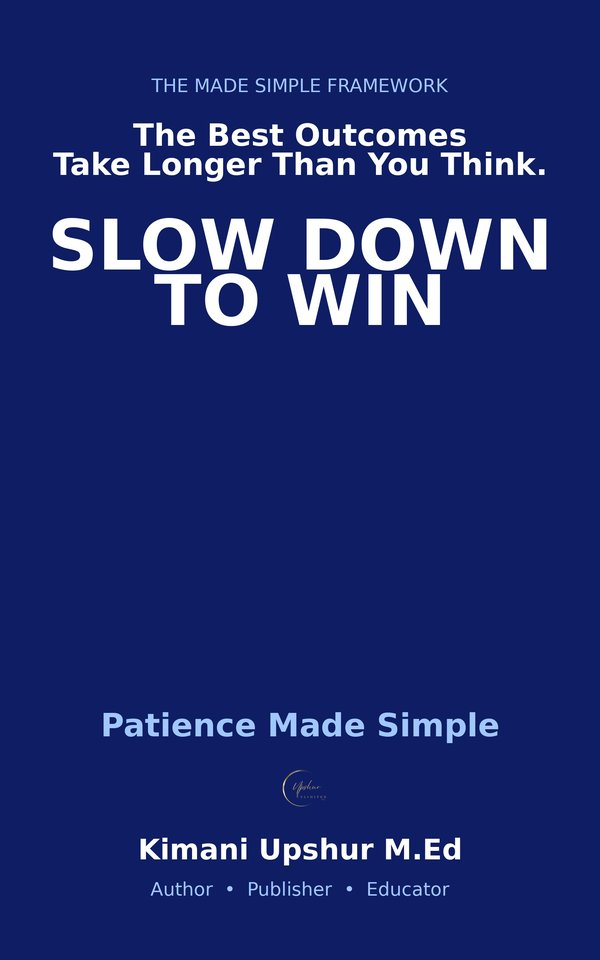

Home / Books / Christian Living

Readers Also Browse
More Christian Living titles.
Abiding Made Simple
Christian Living
by Kimani Upshur, M.Ed.
Ebook $4.99 · Audiobook $9.99
Adaptation Made Simple
Christian Living
by Kimani Upshur, M.Ed.
Ebook $4.99 · Audiobook $9.99
Adaptive Behavior Made Simple
Christian Living
by Kimani Upshur, M.Ed.
Adhd Made Simple
Christian Living
by Kimani Upshur, M.Ed.
Ebook $4.99